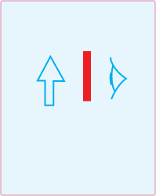
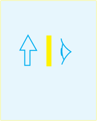
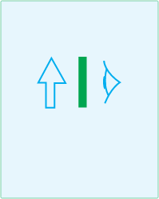

When white light is transmitted through a colour filter, the filter allows only a specific light colour to pass through it. Therefore, the filtered light will have a colour depending on the colour of the filter. For example, the light will be yellow, green, blue or red if the filter used is respectively yellow, green, blue or red. Consequently, if light from one filter is passed through another filter of different colour, the light is absorbed by the second filter. Now, when the light through a filter of a given colour falls on the white object, the object reflects that light into the observer’s sight. Therefore, the object appears to have the colour of the filtered light. Figure 5.22 shows the appearance of a white object under different coloured lights.



Primary, secondary and complementary colours of light
What happens when a physicist simultaneously casts the blue, green and red light beams on a spot on a white screen?
Experiments with beams of various coloured lights have demonstrated that many colours in the light spectrum can be created by mixing other colours. For instance, when light from one end of the spectrum is combined with light from the middle, we can produce all the colours found in that half of the spectrum. Similarly, by mixing lights from both ends of the spectrum with light from the middle, we can generate all the colours that lie in between them.
White light can also be produced by combining only three distinct light colours, provided that they are widely separated on the visible light spectrum. Any three colours of light that produce white light when combined with the correct intensity are called primary